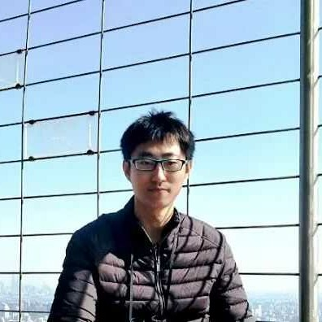

Lu QiPh.D. StudentRm 1026, Ho Sin-Hang Engineering Building Dept. of Computer Science and Engineering The Chinese University of Hong Kong Shatin, N.T., Hong Kong Email: luqi [at] cse.cuhk.edu.hk |
 |
I am a Ph.D. student in Computer Science and Engineering Department, The Chinese University of Hong Kong (CUHK) since 2017. My supervisor is Prof. Jiaya Jia. Before that, I received the M.E. degree in Pattern Recognition and Intelligent System from Institute of Automation, The Chinese Academy of Sciences in 2017 and the B.E. degree in Automation and the B.S. dual degree in Financial Mathematics from Shandong University in 2014.
My research interest includes computer vision and deep learning.
| Hong Kong Ph.D. Fellowship | 2017-2021 |
| The President Scholarship of Shandong University (highest honor) | 2013 |
| Baogang Steel Scholarship (top 0.5%) | 2013 |
| Excellent Student in Shandong Province | 2013 |
| National Scholarship (thrice) | 2011-2013 |
| ENGG1100 Introduction to Engineering Design | Fall | 2018-2019 |
| CSCI3120 Compile Construction | Spring | 2017-2018 |